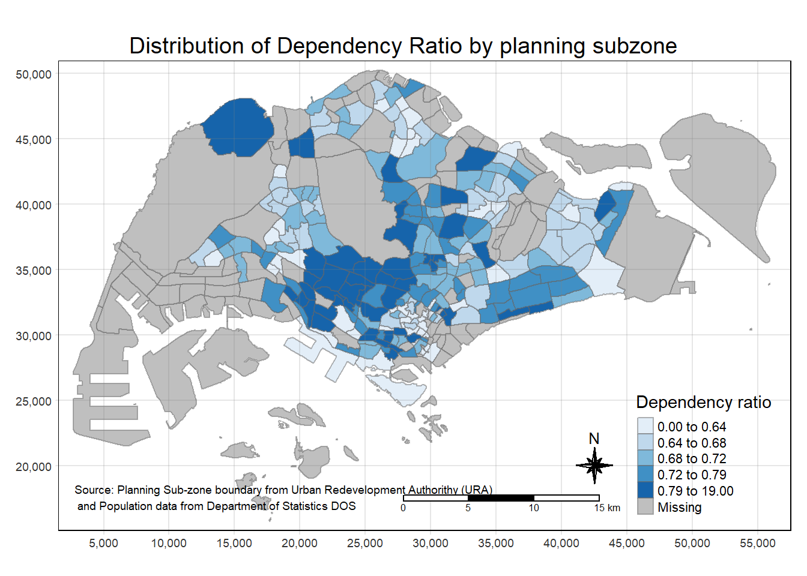
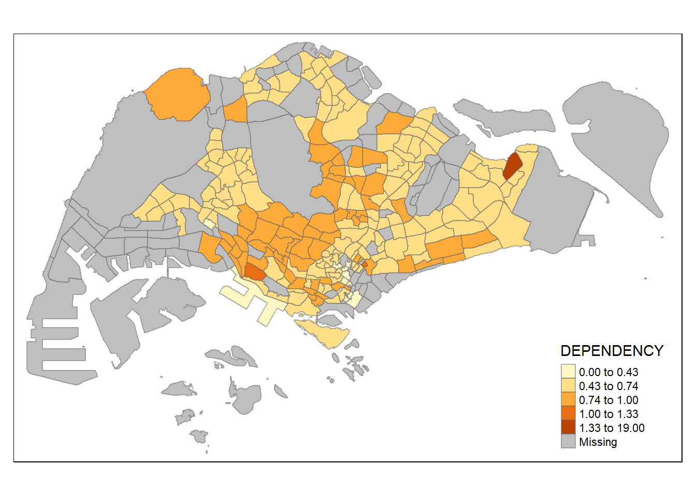
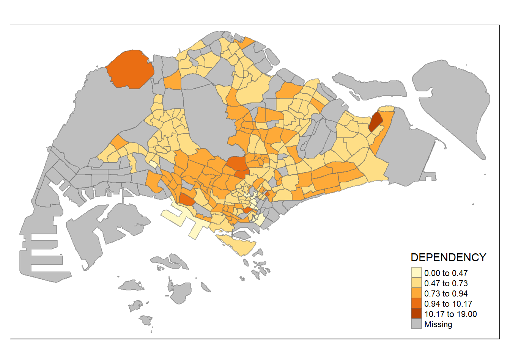
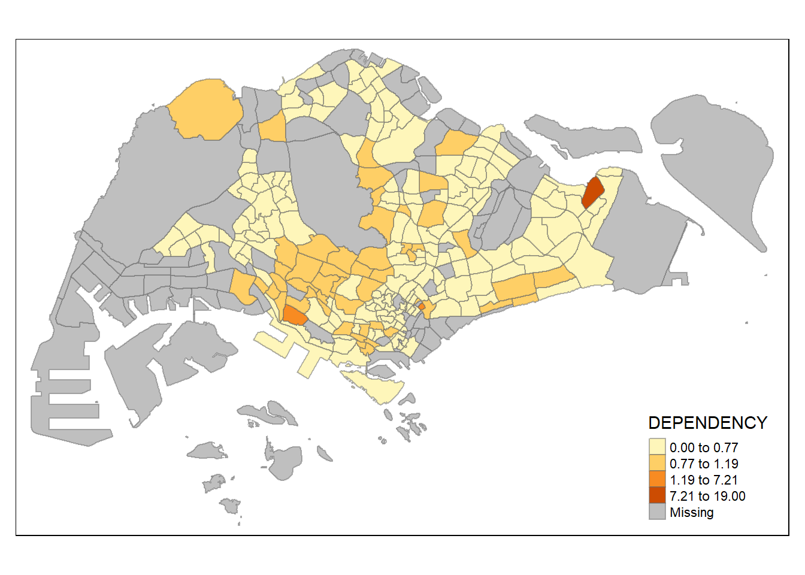
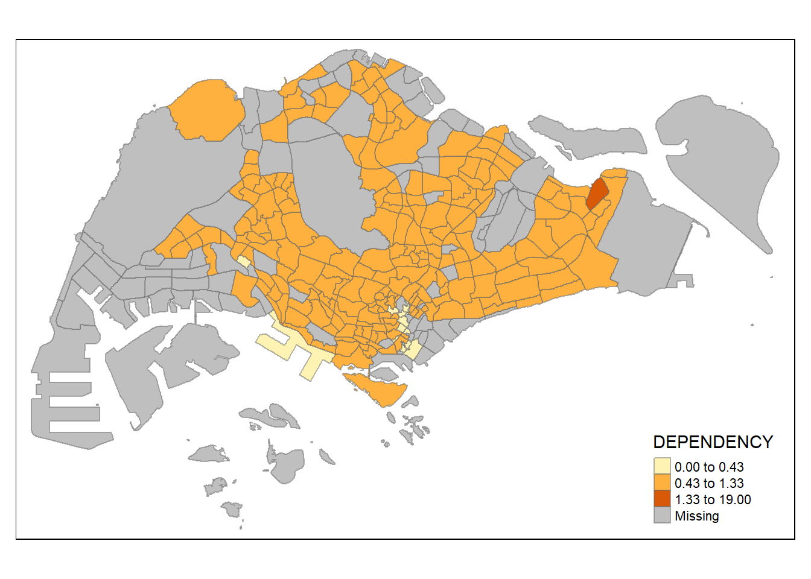
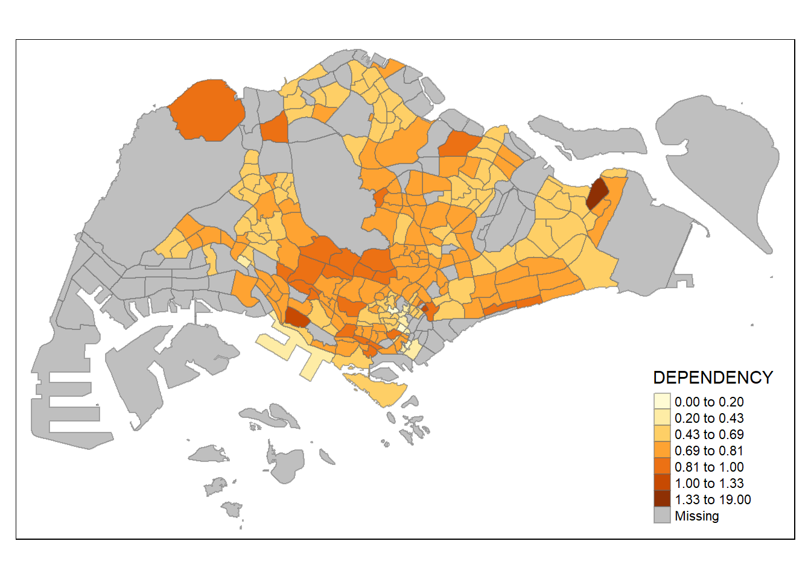
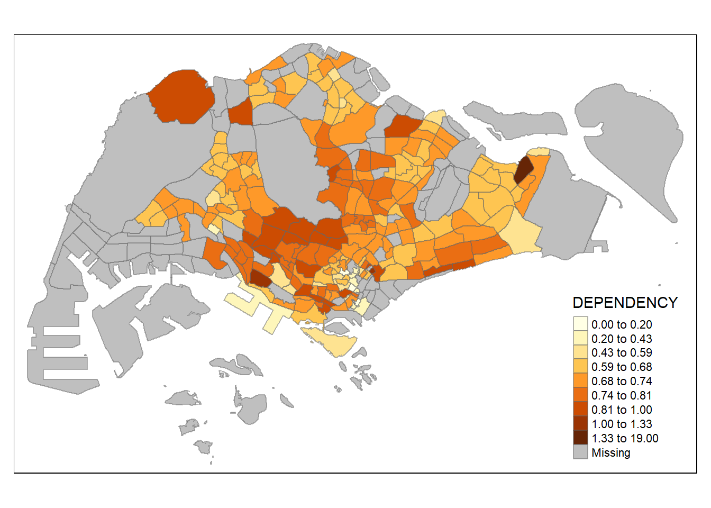
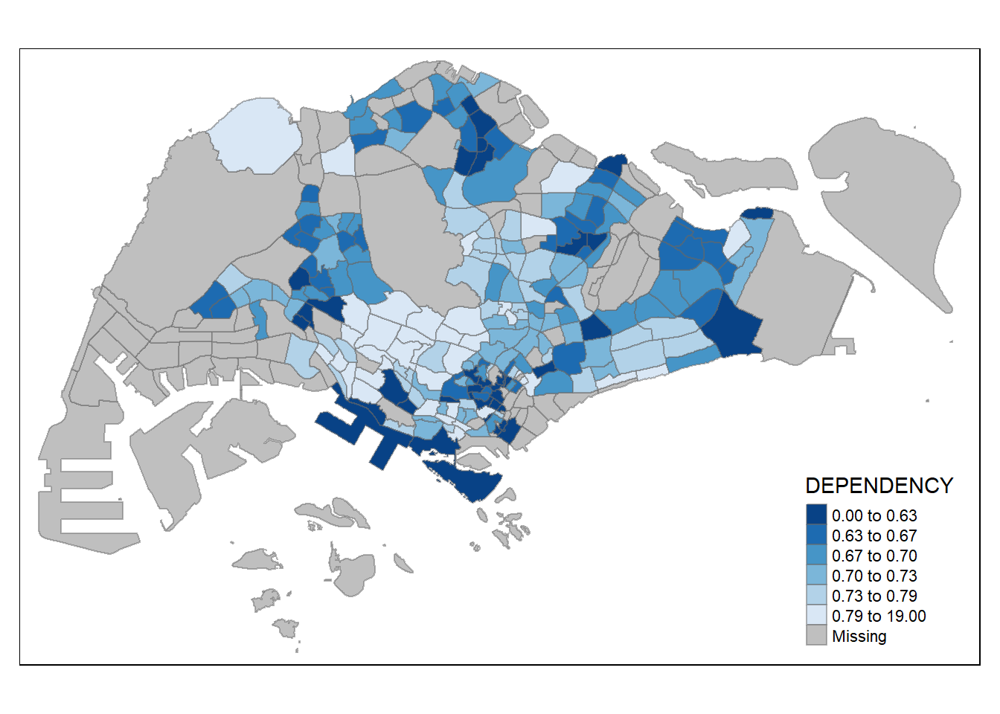
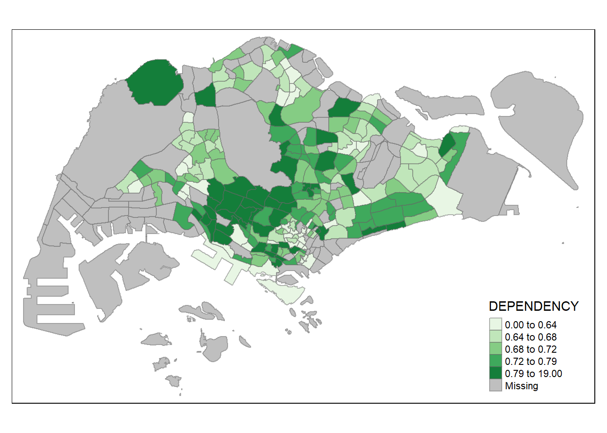

Press to toggle code
pacman::p_load(sf, tmap, tidyverse)The code chunk below installs and loads sf , tmap and tidyverse packages into R environment. The newly introduced package tmap stands for thematic maps and, which from the name itself, helps generate map plots.
pacman::p_load(sf, tmap, tidyverse)mpsz <- st_read(dsn = "data/geospatial", layer = "MP14_SUBZONE_WEB_PL")Reading layer `MP14_SUBZONE_WEB_PL' from data source
`C:\acapgalano\ISSS624\Hands-on_Ex\Hands-on_Ex1\data\geospatial'
using driver `ESRI Shapefile'
Simple feature collection with 323 features and 15 fields
Geometry type: MULTIPOLYGON
Dimension: XY
Bounding box: xmin: 2667.538 ymin: 15748.72 xmax: 56396.44 ymax: 50256.33
Projected CRS: SVY21mpszSimple feature collection with 323 features and 15 fields
Geometry type: MULTIPOLYGON
Dimension: XY
Bounding box: xmin: 2667.538 ymin: 15748.72 xmax: 56396.44 ymax: 50256.33
Projected CRS: SVY21
First 10 features:
OBJECTID SUBZONE_NO SUBZONE_N SUBZONE_C CA_IND PLN_AREA_N
1 1 1 MARINA SOUTH MSSZ01 Y MARINA SOUTH
2 2 1 PEARL'S HILL OTSZ01 Y OUTRAM
3 3 3 BOAT QUAY SRSZ03 Y SINGAPORE RIVER
4 4 8 HENDERSON HILL BMSZ08 N BUKIT MERAH
5 5 3 REDHILL BMSZ03 N BUKIT MERAH
6 6 7 ALEXANDRA HILL BMSZ07 N BUKIT MERAH
7 7 9 BUKIT HO SWEE BMSZ09 N BUKIT MERAH
8 8 2 CLARKE QUAY SRSZ02 Y SINGAPORE RIVER
9 9 13 PASIR PANJANG 1 QTSZ13 N QUEENSTOWN
10 10 7 QUEENSWAY QTSZ07 N QUEENSTOWN
PLN_AREA_C REGION_N REGION_C INC_CRC FMEL_UPD_D X_ADDR
1 MS CENTRAL REGION CR 5ED7EB253F99252E 2014-12-05 31595.84
2 OT CENTRAL REGION CR 8C7149B9EB32EEFC 2014-12-05 28679.06
3 SR CENTRAL REGION CR C35FEFF02B13E0E5 2014-12-05 29654.96
4 BM CENTRAL REGION CR 3775D82C5DDBEFBD 2014-12-05 26782.83
5 BM CENTRAL REGION CR 85D9ABEF0A40678F 2014-12-05 26201.96
6 BM CENTRAL REGION CR 9D286521EF5E3B59 2014-12-05 25358.82
7 BM CENTRAL REGION CR 7839A8577144EFE2 2014-12-05 27680.06
8 SR CENTRAL REGION CR 48661DC0FBA09F7A 2014-12-05 29253.21
9 QT CENTRAL REGION CR 1F721290C421BFAB 2014-12-05 22077.34
10 QT CENTRAL REGION CR 3580D2AFFBEE914C 2014-12-05 24168.31
Y_ADDR SHAPE_Leng SHAPE_Area geometry
1 29220.19 5267.381 1630379.3 MULTIPOLYGON (((31495.56 30...
2 29782.05 3506.107 559816.2 MULTIPOLYGON (((29092.28 30...
3 29974.66 1740.926 160807.5 MULTIPOLYGON (((29932.33 29...
4 29933.77 3313.625 595428.9 MULTIPOLYGON (((27131.28 30...
5 30005.70 2825.594 387429.4 MULTIPOLYGON (((26451.03 30...
6 29991.38 4428.913 1030378.8 MULTIPOLYGON (((25899.7 297...
7 30230.86 3275.312 551732.0 MULTIPOLYGON (((27746.95 30...
8 30222.86 2208.619 290184.7 MULTIPOLYGON (((29351.26 29...
9 29893.78 6571.323 1084792.3 MULTIPOLYGON (((20996.49 30...
10 30104.18 3454.239 631644.3 MULTIPOLYGON (((24472.11 29...popdata <- read_csv("data/aspatial/respopagesextod2011to2020.csv")Rows: 984656 Columns: 7
── Column specification ────────────────────────────────────────────────────────
Delimiter: ","
chr (5): PA, SZ, AG, Sex, TOD
dbl (2): Pop, Time
ℹ Use `spec()` to retrieve the full column specification for this data.
ℹ Specify the column types or set `show_col_types = FALSE` to quiet this message.popdata2020 <- popdata %>%
filter(Time == 2020) %>%
group_by(PA, SZ, AG) %>%
summarise(`POP` = sum(`Pop`)) %>%
ungroup()%>%
pivot_wider(names_from=AG,
values_from=POP) %>%
mutate(YOUNG = rowSums(.[3:6])
+rowSums(.[12])) %>%
mutate(`ECONOMY ACTIVE` = rowSums(.[7:11])+
rowSums(.[13:15]))%>%
mutate(`AGED`=rowSums(.[16:21])) %>%
mutate(`TOTAL`=rowSums(.[3:21])) %>%
mutate(`DEPENDENCY` = (`YOUNG` + `AGED`)
/`ECONOMY ACTIVE`) %>%
select(`PA`, `SZ`, `YOUNG`,
`ECONOMY ACTIVE`, `AGED`,
`TOTAL`, `DEPENDENCY`)`summarise()` has grouped output by 'PA', 'SZ'. You can override using the
`.groups` argument.popdata2020 <- popdata2020 %>%
mutate_at(.vars = vars(PA, SZ),
.funs = funs(toupper)) %>%
filter(`ECONOMY ACTIVE` > 0)Warning: `funs()` was deprecated in dplyr 0.8.0.
Please use a list of either functions or lambdas:
# Simple named list:
list(mean = mean, median = median)
# Auto named with `tibble::lst()`:
tibble::lst(mean, median)
# Using lambdas
list(~ mean(., trim = .2), ~ median(., na.rm = TRUE))
This warning is displayed once every 8 hours.
Call `lifecycle::last_lifecycle_warnings()` to see where this warning was generated.mpsz_pop2020 <- left_join(mpsz, popdata2020,
by = c("SUBZONE_N" = "SZ"))write_rds(mpsz_pop2020, "data/rds/mpszpop2020.rds")tmapqtm()tmap_mode("plot")tmap mode set to plottingqtm(mpsz_pop2020,
fill = "DEPENDENCY")
tmap’s elementstm_shape(mpsz_pop2020)+
tm_fill("DEPENDENCY",
style = "quantile",
palette = "Blues",
title = "Dependency ratio") +
tm_layout(main.title = "Distribution of Dependency Ratio by planning subzone",
main.title.position = "center",
main.title.size = 1.2,
legend.height = 0.45,
legend.width = 0.35,
frame = TRUE) +
tm_borders(alpha = 0.5) +
tm_compass(type="8star", size = 2) +
tm_scale_bar() +
tm_grid(alpha =0.2) +
tm_credits("Source: Planning Sub-zone boundary from Urban Redevelopment Authorithy (URA)\n and Population data from Department of Statistics DOS",
position = c("left", "bottom"))
tm_shape(mpsz_pop2020) + tm_polygons()
tm_polygons()tm_shape(mpsz_pop2020) + tm_polygons("DEPENDENCY")
tm_fill() and tm_border()tm_shape(mpsz_pop2020)+ tm_fill("DEPENDENCY")
tm_shape(mpsz_pop2020) + tm_fill("DEPENDENCY") + tm_borders(lwd = 0.1, alpha = 1)
tmapjenkstm_shape(mpsz_pop2020) + tm_fill("DEPENDENCY",
n = 5, style = "jenks") + tm_borders(alpha = 0.5)
equaltm_shape(mpsz_pop2020)+
tm_fill("DEPENDENCY",
n = 5,
style = "equal") +
tm_borders(alpha = 0.5)
DIY: Using what you had learned, prepare choropleth maps by using different classification methods supported by tmap and compare their differences.
Method: kmeans
tm_shape(mpsz_pop2020) + tm_fill("DEPENDENCY",
n = 5, style = "kmeans") + tm_borders(alpha = 0.5)
Method: headtails
tm_shape(mpsz_pop2020) + tm_fill("DEPENDENCY",
n = 5, style = "headtails") + tm_borders(alpha = 0.5)
Method: pretty
tm_shape(mpsz_pop2020) + tm_fill("DEPENDENCY",
n = 5, style = "pretty") + tm_borders(alpha = 0.5)
Observations:
The methods pretty and equal are both visually dominated by the lighted tone. This is because the dependency values are all mostly at the lower end of the range set by the method.
The methods kmeans and jenks both have a more spread coloring but still have differences in which subzones are set as a particular color.
The method headstails has lesser classes or groups of colors, and seems to be leaning towards the lower end of the spectrum.
It’s important to choose the classification method that best represents the data and how it should be grouped as classes.
DIY: Preparing choropleth maps by using similar classification method but with different numbers of classes (i.e. 2, 6, 10, 20). Compare the output maps, what observation can you draw?
Using the classification method jenks, we have the following graphs with different number of classes:
n = 3
tm_shape(mpsz_pop2020) + tm_fill("DEPENDENCY", n = 3, style = "jenks") + tm_borders(alpha = 0.5)
n = 5
tm_shape(mpsz_pop2020) + tm_fill("DEPENDENCY", n = 5, style = "jenks") + tm_borders(alpha = 0.5)
n = 7
tm_shape(mpsz_pop2020) + tm_fill("DEPENDENCY", n = 7, style = "jenks") + tm_borders(alpha = 0.5)
n = 9
tm_shape(mpsz_pop2020) + tm_fill("DEPENDENCY", n = 9, style = "jenks") + tm_borders(alpha = 0.5)
Observation:
Having a lesser number of classes has the tendency to group a bunch of the subzones into just one class, which may not be an accurate representation of reality.
Too many classes will create groups with only one colored subzone, which may also not be an accurate representation.
summary(mpsz_pop2020$DEPENDENCY) Min. 1st Qu. Median Mean 3rd Qu. Max. NA's
0.0000 0.6519 0.7025 0.7742 0.7645 19.0000 92 tm_shape(mpsz_pop2020)+
tm_fill("DEPENDENCY",
breaks = c(0, 0.60, 0.70, 0.80, 0.90, 1.00)) + tm_borders(alpha = 0.5)Warning: Values have found that are higher than the highest break
tm_shape(mpsz_pop2020)+
tm_fill("DEPENDENCY",
n = 6,
style = "quantile",
palette = "Blues") + tm_borders(alpha = 0.5)
By adding - before the palette, the colors can go in reverse as shown below.
tm_shape(mpsz_pop2020)+
tm_fill("DEPENDENCY",
n = 6,
style = "quantile",
palette = "-Blues") + tm_borders(alpha = 0.5)
As another example, we have the greens palette.
tm_shape(mpsz_pop2020)+
tm_fill("DEPENDENCY",
style = "quantile",
palette = "Greens") +
tm_borders(alpha = 0.5)
tm_shape(mpsz_pop2020)+
tm_fill("DEPENDENCY",
style = "quantile",
palette = "-Greens") +
tm_borders(alpha = 0.5)
tm_shape(mpsz_pop2020)+
tm_fill("DEPENDENCY",
style = "jenks",
palette = "Blues",
legend.hist = TRUE,
legend.is.portrait = TRUE,
legend.hist.z = 0.1) +
tm_layout(main.title = "Distribution of Dependency Ratio by planning subzone \n(Jenks classification)",
main.title.position = "center",
main.title.size = 1,
legend.height = 0.45,
legend.width = 0.35,
legend.outside = FALSE,
legend.position = c("right", "bottom"),
frame = FALSE) +
tm_borders(alpha = 0.5)
tm_shape(mpsz_pop2020)+
tm_fill("DEPENDENCY",
style = "quantile",
palette = "-Greens") +
tm_borders(alpha = 0.5) +
tmap_style("classic")tmap style set to "classic"other available styles are: "white", "gray", "natural", "cobalt", "col_blind", "albatross", "beaver", "bw", "watercolor" 
tm_shape(mpsz_pop2020)+
tm_fill("DEPENDENCY",
style = "quantile",
palette = "Blues",
title = "No. of persons") +
tm_layout(main.title = "Distribution of Dependency Ratio \nby planning subzone",
main.title.position = "center",
main.title.size = 1.2,
legend.height = 0.45,
legend.width = 0.35,
frame = TRUE) +
tm_borders(alpha = 0.5) +
tm_compass(type="8star", size = 2) +
tm_scale_bar(width = 0.15) +
tm_grid(lwd = 0.1, alpha = 0.2) +
tm_credits("Source: Planning Sub-zone boundary from Urban Redevelopment Authorithy (URA)\n and Population data from Department of Statistics DOS",
position = c("left", "bottom"))
tm_shape(mpsz_pop2020)+
tm_fill(c("YOUNG", "AGED"),
style = "equal",
palette = "Blues") +
tm_layout(legend.position = c("right", "bottom")) +
tm_borders(alpha = 0.5) +
tmap_style("white")tmap style set to "white"other available styles are: "gray", "natural", "cobalt", "col_blind", "albatross", "beaver", "bw", "classic", "watercolor" 
tm_shape(mpsz_pop2020)+
tm_polygons(c("DEPENDENCY","AGED"),
style = c("equal", "quantile"),
palette = list("Blues","Greens")) +
tm_layout(legend.position = c("right", "bottom"))
tm_facets()tm_shape(mpsz_pop2020) +
tm_fill("DEPENDENCY",
style = "quantile",
palette = "Blues",
thres.poly = 0) +
tm_facets(by="REGION_N",
free.coords=TRUE,
drop.shapes=TRUE) +
tm_layout(legend.show = FALSE,
title.position = c("center", "center"),
title.size = 20) +
tm_borders(alpha = 0.5)Warning: The argument drop.shapes has been renamed to drop.units, and is
therefore deprecated
tmap_arrange()youngmap <- tm_shape(mpsz_pop2020)+
tm_polygons("YOUNG",
style = "quantile",
palette = "Blues")
agedmap <- tm_shape(mpsz_pop2020)+
tm_polygons("AGED",
style = "quantile",
palette = "Blues")
tmap_arrange(youngmap, agedmap, asp=1, ncol=2)
tm_shape(mpsz_pop2020[mpsz_pop2020$REGION_N=="CENTRAL REGION", ])+
tm_fill("DEPENDENCY",
style = "quantile",
palette = "Blues",
legend.hist = TRUE,
legend.is.portrait = TRUE,
legend.hist.z = 0.1) +
tm_layout(legend.outside = TRUE,
legend.height = 0.45,
legend.width = 5.0,
legend.position = c("right", "bottom"),
frame = FALSE) +
tm_borders(alpha = 0.5)Warning in pre_process_gt(x, interactive = interactive, orig_crs =
gm$shape.orig_crs): legend.width controls the width of the legend within a map.
Please use legend.outside.size to control the width of the outside legend